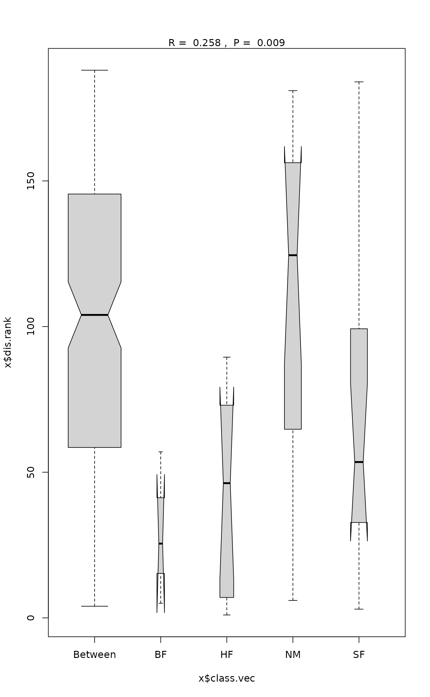

Analysis of Similarities
anosim.RdAnalysis of similarities (ANOSIM) provides a way to test statistically whether there is a significant difference between two or more groups of sampling units.
Usage
anosim(x, grouping, permutations = 999, distance = "bray", strata = NULL,
parallel = getOption("mc.cores"))Arguments
- x
Data matrix or data frame in which rows are samples and columns are response variable(s), or a dissimilarity object or a symmetric square matrix of dissimilarities.
- grouping
Factor for grouping observations.
- permutations
a list of control values for the permutations as returned by the function
how, or the number of permutations required, or a permutation matrix where each row gives the permuted indices.- distance
Choice of distance metric that measures the dissimilarity between two observations. See
vegdistfor options. This will be used ifxwas not a dissimilarity structure or a symmetric square matrix.- strata
An integer vector or factor specifying the strata for permutation. If supplied, observations are permuted only within the specified strata.
- parallel
Number of parallel processes or a predefined socket cluster. With
parallel = 1uses ordinary, non-parallel processing. The parallel processing is done with parallel package.
Details
Analysis of similarities (ANOSIM) provides a way to test statistically
whether there is a significant difference between two or more groups
of sampling units. Function anosim operates directly on a
dissimilarity matrix. A suitable dissimilarity matrix is produced by
functions dist or vegdist. The
method is philosophically allied with NMDS ordination
(monoMDS), in that it uses only the rank order of
dissimilarity values.
If two groups of sampling units are really different in their species
composition, then compositional dissimilarities between the groups
ought to be greater than those within the groups. The anosim
statistic \(R\) is based on the difference of mean ranks between
groups (\(r_B\)) and within groups (\(r_W\)):
$$R = (r_B - r_W)/(N (N-1) / 4)$$
The divisor is chosen so that \(R\) will be in the interval \(-1 \dots +1\), value \(0\) indicating completely random grouping.
The statistical significance of observed \(R\) is assessed by
permuting the grouping vector to obtain the empirical distribution
of \(R\) under null-model. See permutations for
additional details on permutation tests in Vegan. The distribution
of simulated values can be inspected with the permustats
function.
The function has summary and plot methods. These both
show valuable information to assess the validity of the method: The
function assumes that all ranked dissimilarities within groups
have about equal median and range. The plot method uses
boxplot with options notch=TRUE and
varwidth=TRUE.
Value
The function returns a list of class "anosim" with following
items:
- call
Function call.
- statistic
The value of ANOSIM statistic \(R\)
- signif
Significance from permutation.
- perm
Permutation values of \(R\). The distribution of permutation values can be inspected with function
permustats.- class.vec
Factor with value
Betweenfor dissimilarities between classes and class name for corresponding dissimilarity within class.- dis.rank
Rank of dissimilarity entry.
- dissimilarity
The name of the dissimilarity index: the
"method"entry of thedistobject.- control
A list of control values for the permutations as returned by the function
how.
References
Clarke, K. R. (1993). Non-parametric multivariate analysis of changes in community structure. Australian Journal of Ecology 18, 117–143.
Warton, D.I., Wright, T.W., Wang, Y. 2012. Distance-based multivariate analyses confound location and dispersion effects. Methods in Ecology and Evolution, 3, 89–101
Note
The anosim function can confound the differences between groups
and dispersion within groups and the results can be difficult to
interpret (cf. Warton et al. 2012). The function returns a lot of
information to ease studying its performance. Most anosim
models could be analysed with adonis2 which seems to be a
more robust alternative.
See also
mrpp for a similar function using original
dissimilarities instead of their ranks.
dist and vegdist for obtaining
dissimilarities, and rank for ranking real values. For
comparing dissimilarities against continuous variables, see
mantel. Function adonis2 is a more robust
alternative that should preferred.
Examples
data(dune)
data(dune.env)
dune.dist <- vegdist(dune)
dune.ano <- with(dune.env, anosim(dune.dist, Management))
summary(dune.ano)
#>
#> Call:
#> anosim(x = dune.dist, grouping = Management)
#> Dissimilarity: bray
#>
#> ANOSIM statistic R: 0.2579
#> Significance: 0.009
#>
#> Permutation: free
#> Number of permutations: 999
#>
#> Upper quantiles of permutations (null model):
#> 90% 95% 97.5% 99%
#> 0.121 0.164 0.205 0.242
#>
#> Dissimilarity ranks between and within classes:
#> 0% 25% 50% 75% 100% N
#> Between 4 58.50 104.00 145.500 188.0 147
#> BF 5 15.25 25.50 41.250 57.0 3
#> HF 1 7.25 46.25 68.125 89.5 10
#> NM 6 64.75 124.50 156.250 181.0 15
#> SF 3 32.75 53.50 99.250 184.0 15
#>
plot(dune.ano)
#> Warning: some notches went outside hinges ('box'): maybe set notch=FALSE
